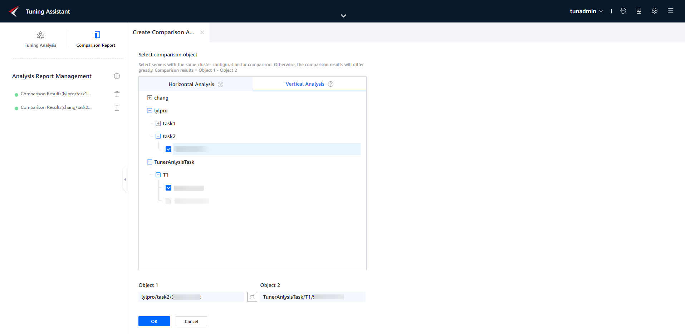
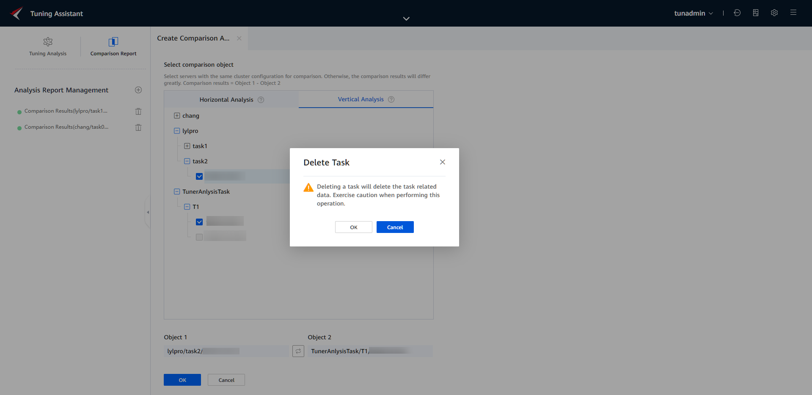

Prerequisites
- A common analysis project has been created, and the project does not contain a node in the Offline state.
- Users can create analysis tasks only under their own projects.
Procedure
- Click
 next to Analysis Report Management.
next to Analysis Report Management.Create a comparison analysis task. The system provides two analysis modes, as shown in Table 1.
- (Optional) Create a comparison analysis task and select the Horizontal Analysis mode.
- Select different nodes under the same task of the same project. Click
 to change the positions of object 1 and object 2.Figure 1 Creating a horizontal comparison analysis task
to change the positions of object 1 and object 2.Figure 1 Creating a horizontal comparison analysis task
- Click OK. The horizontal comparison analysis task is created.
- Select different nodes under the same task of the same project. Click
- (Optional) Create a comparison analysis task and select the Vertical Analysis mode.
- Select two nodes under different tasks. Click
 to change the positions of object 1 and object 2.Figure 2 Creating a vertical comparison analysis task
to change the positions of object 1 and object 2.Figure 2 Creating a vertical comparison analysis task
 - Click OK. The vertical comparison analysis task is created.
- Select two nodes under different tasks. Click
- (Optional) Delete historical reports.

After a historical report is deleted, the analysis data of the historical report cannot be restored. Exercise caution when performing this operation.
- Select a history report under Analysis Report Management in the left pane. Click on the right of the selected history report.Figure 3 Deleting a report
 - Click OK to delete the history report.
- Select a history report under Analysis Report Management in the left pane. Click on the right of the selected history report.